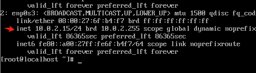
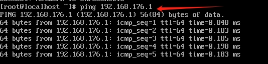

虚拟机的网络类型和静态ip的设置
背景介绍
虚拟机的网络配置对于使用虚拟机特别重要，我去了解了一下关于虚拟机网络的东西，在这里做个记录。
虚拟机的网络配置
虚拟机的网络类型
- NAT (Network address translation) 模式
也叫网络地址转换模式。在 NAT 模式下，虚拟机要访问外部网络，需要经过宿主机进行处理，再连接到外部网络。虚拟机可以访问外部网络和宿主机，宿主机无法访问虚拟机。举个形象的例子，小红（虚拟机）要过桥去村子外面买菜，但是这座桥是小黄（宿主机）的，因此需要小黄同意才可以过桥。在这种情况下，宿主机可以看做充当路由器的作用，宿主机虚拟出来的dhcp服务器会给虚拟机分配一个局域网的 ip 地址。在这种情况下，外部网络无法访问我们的虚拟机，比较安全。 - 桥接模式
在桥接模式下，虚拟机和宿主机类似于兄弟，属于同一网段的独立网络。虚拟机直接和外部网络相连，宿主机充当了虚拟机和外部网络的桥梁，从而实现了虚拟机和外部网络的通信。虚拟机可以访问外部网络和宿主机，宿主机也可以访问虚拟机。但是在这种情况下，外部网络可以访问虚拟机，并不安全。 - 仅主机模式Host-only网络
开启仅主机模式Host-only网络之前，我们需要在Virtual Box创建一个Ethernet Adapter，其和宿主机虚拟出来的网卡处于在同一个网段，虚拟机和宿主机共享一个网络，从而实现了主机和多个虚拟机之间的通信。虚拟机可以访问宿主机，无法访问外部网络。宿主机可以访问虚拟机。
NAT模式
- 将虚拟机设置为 NAT 模式
- 查看 ip
ip a
ip 为10.0.2.15 - 访问宿主机(172.16.34.145)
ping 172.16.34.145
能和宿主机通信 - 访问外部网络
ping www.baidu.com
能够访问外部网络。 - 宿主机访问虚拟机
ping 10.0.2.15
宿主机无法访问虚拟机。
桥接模式
- 将虚拟机设置为桥接模式
- 查看 ip
ip a
ip 为172.16.34.246，与宿主机的外部网络在同一网段。 - 访问宿主机(172.16.34.145)
ping 172.16.34.145
能和宿主机通信 - 访问外部网络
ping www.baidu.com
能够访问外部网络。 - 宿主机访问虚拟机
ping 172.16.34.246
宿主机可以访问虚拟机。
仅主机模式Host-only网络
- 设置全局的网卡：管理 -> 工具 -> 网络配置管理器 -> 创建
启动DHCP服务器
- 将虚拟机设置为仅主机模式Host-only网络
- 查看 ip
ip a
ip 为192.168.176.3 - 访问宿主机(172.16.34.145)
ping 172.16.34.145
无法和宿主机进行通信，经过分析发现宿主机和虚拟机的 ip 不在一个网段，肯定无法访问的，现在宿主机的 ip 相当于一个外部网络的 ip 。 我们可以通过宿主机的局域网 ip (192.168.176.1)进行访问，其和虚拟机的 ip 在同一个网段。
可以访问宿主机

通过查看 Virtual Box的网络配置，可以看到相应的 ip 地址分配方案，ip 地址会在最小地址和最大地址之间随机生成。 - 访问外部网络
ping www.baidu.com
无法访问外部网络。 - 宿主机访问虚拟机
ping 192.168.176.3
宿主机可以访问虚拟机，如果访问不了，请关闭宿主机的防火墙。
常用的网络配置
- NAT模式+仅主机模式Host-only网络
- 桥接网络
NAT模式+仅主机模式Host-only网络
- 网卡1设置为仅主机模式Host-only网络，网卡2设置设置为NAT模式
- 查看 ip
ip a
存在两张网卡：enp0s3 (192.168.176.3)，enp0s8 (10.0.3.15) - 访问宿主机(172.16.34.145)
ping 172.16.34.145
能和宿主机通信 - 访问外部网络
ping www.baidu.com
能够访问外部网络。 - 宿主机访问虚拟机
ping 192.168.176.3
宿主机可以访问虚拟机。
静态 ip 地址配置：以桥接网络为例
- 查看 ip
ip a
ip 为172.16.34.246，与宿主机的外部网络在同一网段。 - 该 ip 为动态分配的，下次开机可能 ip 会改变，因此需要设置静态 ip。
vi /etc/sysconfig/network-scripts/ifcfg-enp0s3
BOOTPROTO=static
IPADDR=172.16.34.123
NETMASK=255.255.255.0
GATEWAY=172.16.34.1 #和宿主机一样
DNS1=114.114.114.114
DNS2=8.8.8.8 - 重启网卡
nmcli connection down enp0s3 && nmcli connection up enp0s3 ——重启网卡enp0s3
- 查看 ip
ip a
修改 ip 为：172.16.34.123
参考
本博客所有文章除特别声明外，均采用 CC BY-NC-SA 4.0 许可协议。转载请注明来自 哆啦酱的点心屋！
相关推荐


评论